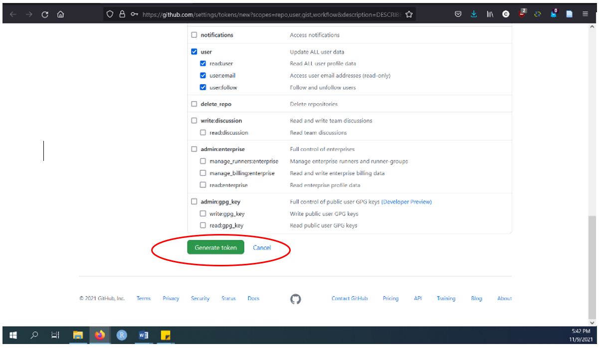
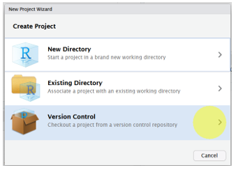
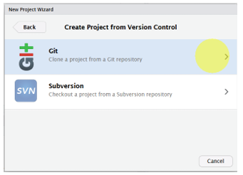
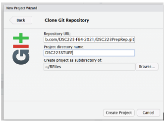

passwdLab 01 - Hello R!
R is the name of the programming language itself and RStudio is a convenient interface.
The main goal of this lab is to introduce you to R and RStudio, which we will be using throughout the course both to learn the statistical concepts discussed in the course and to analyze real data and come to informed conclusions.
git is a version control system (like “Track Changes” features from Microsoft Word on steroids) and GitHub is the home for your Git-based projects on the internet (like DropBox but much, much better).
An additional goal is to introduce you to Git and GitHub, which is the collaboration and version control system that we will be using throughout the course.
As the labs progress, you are encouraged to explore beyond what the labs dictate; a willingness to experiment will make you a much better programmer. Before we get to that stage, however, you need to build some basic fluency in R. Today we begin with the fundamental building blocks of R and RStudio: the interface, reading in data, and basic commands.
And to make versioning simpler, this is a solo lab. Additionally, we want to make sure everyone gets a significant amount of time at the steering wheel. In future labs you’ll learn about collaborating on GitHub and produce a single lab report for your team.
Using RStudio Server
To get to RStudio server go to http://turing.cornellcollege.edu:8787/ while on campus on any computer. You username is your Cornell College username in all lowercase. Your default password is abc123.
Changing your RStudio Server Password
In the bottom left corner of RStudio, you should see “Terminal” tab. Click that and run the line
Now you should be prompted to put in your current password. The default is abc123.
Next you will need to enter your new password once, click enter, and enter it again. That is your new password for logging into RStudio Server.
Now, click back in the lower left corner of RStudio, click “Console” and continue the lab.
Connecting GitHub and RStudio Cloud
You should have already received an invitation to join the GitHub organization for this course. You need to accept the invitation before moving on to the next step.
Connect your RStudio and GitHub accounts by following the steps below:
Step 1
Run the following in the console in R. If you have popup blockers you may need to disable them. This will bring you to github and look like the image below.
usethis::create_github_token()Step 2
Sign into your GitHub account.
Step 3
Next you need to change the note box circled in the following image. This should be named something having to do with this class but has to be unique. For example “DSC223-FB4-MyName.” You are having Github create you a super secret secure password (essentially).It is called a Personal Access Token (PAT).

Step 4
Next scroll all the way to the bottom and match the checked boxes below. Click “Generate token” as show in the image:

Step 5
We need this new code, click the copy button as shown in the next image. This puts the code on your clipboard to be pasted. Afterword comeback to this window.

Step 6
Keep your PAT somewhere you can copy it easily.
Step 7
Now go back to the terminal in RStudio (bottom left). Type the following, changing out your email (that you used for your GitHub account) and your name where appropriate.
git config --global user.email "change this to your email"
git config --global user.name "change this to your name"Yay! You did it!
Getting started
Each of your assignments will begin with the following steps. We may have done this together in class already too; they’re outlined in detail here again. Going forward each lab will start with a “Getting started” section but details will be a bit more sparse than this. You can always refer back to this lab for a detailed list of the steps involved for getting started with an assignment.
- Click your generic picture in the top right hand corner, and then click Your Organizations. You should see in the list, one with DSC223 in the name. Click that one. Next click repositories at the top. Now you should see your repo’s and the website repo.

- Now, click on the green Code button, select Use HTTPS (this might already be selected by default). Click on the clipboard icon to copy the repo URL.

- Go to RStudio Server. Create a New Project. You will need to click File and then New Project

- Next, click Version control.

- Click Git.

- Copy and paste the URL of your assignment repo into the dialog box: - Hit OK. It might ask you to log in to Github now and/or your PAT you just created.
Warm up
Before we introduce the data, let’s warm up with some simple exercises.
The top portion of your R Markdown file (between the three dashed lines) is called YAML. It stands for “YAML Ain’t Markup Language”. It is a human friendly data serialization standard for all programming languages. All you need to know is that this area is called the YAML (we will refer to it as such) and that it contains meta information about your document.
YAML
Open the R Markdown (Rmd) file in your project, change the author name to your name, and knit the document.

Committing changes
Go to the Git pane in your RStudio (top right) and click on Commit. This will bring up a new menu.

If you have made changes to your Rmd file (which you just changed your name), you should see it list on of the left. Diff shows you the difference between the last committed state of the document and its current state that includes your changes. Look over the files in the box that say they have been change. If agree with these changes, you will need to check the box to the left of each changed file, and in this case, write “Update author name” in the Commit message box. Then click Commit. It is important that you always describe what changes were made since your last commit in that box. This is how people in your team know what you changed without having to review thousands of lines of code.

You don’t have to commit after every change, this would get quite cumbersome. You should consider committing states that are meaningful to you for inspection, comparison, or restoration. In the first few assignments we will tell you exactly when to commit and in some cases, what commit message to use. As the block progresses we will let you make these decisions. Committing does not save your progress to the web.
Pushing changes
Now that you have made an update and committed this change, it’s time to push these changes to the web! Or more specifically, to your repo on GitHub. Why? So that others can see your changes. And by others, we mean whoever you are working with.
In order to push your changes to GitHub, click on Push. This will prompt a dialogue box where you first need to enter your user name, and then your password, then your PAT. This might feel cumbersome. Bear with me… We will teach you how to save your password so you don’t have to enter it every time. But for this one assignment you’ll have to manually enter each time you push in order to gain some experience with it.
Packages
In this lab we will work with two more packages: datasauRus which contains the dataset we’ll be using and tidyverse which is a collection of packages for doing data analysis in a “tidy” way. These packages are already installed for you. You can load the packages by running the following in the Console.
library(tidyverse)
library(datasauRus)Note that the packages are also loaded with the same commands in your R Markdown document.
Data
If it’s confusing that the data frame is called datasaurus_dozen when it contains 13 datasets, you’re not alone! Have you heard of a baker’s dozen?
The data frame we will be working with today is called datasaurus_dozen and it’s in the datasauRus package. Actually, this single data frame contains 13 datasets, designed to show us why data visualization is important and how summary statistics alone can be misleading. The different datasets are marked by the dataset variable.
To find out more about the dataset, type the following in your Console: ?datasaurus_dozen. A question mark before the name of an object will always bring up its help file. This command must be ran in the Console.
Exercises
- Based on the help file, how many rows and how many columns does the
datasaurus_dozenfile have? What are the variables included in the data frame? Add your responses to your lab report.
Let’s take a look at what these datasets are. To do so we can make a frequency table of the dataset variable:
datasaurus_dozen %>%
count(dataset) %>%
print(13)# A tibble:
# 13 × 2
dataset
<chr>
1 away
2 bullseye
3 circle
4 dino
5 dots
6 h_lines
7 high_lines
8 slant_down
9 slant_up
10 star
11 v_lines
12 wide_lines
13 x_shape
# … with 1
# more
# variable:
# n <int>Matejka, Justin, and George Fitzmaurice. “Same stats, different graphs: Generating datasets with varied appearance and identical statistics through simulated annealing.” Proceedings of the 2017 CHI Conference on Human Factors in Computing Systems. ACM, 2017.
The original Datasaurus (dino) was created by Alberto Cairo in this great blog post. The other Dozen were generated using simulated annealing and the process is described in the paper Same Stats, Different Graphs: Generating Datasets with Varied Appearance and Identical Statistics through Simulated Annealing by Justin Matejka and George Fitzmaurice. In the paper, the authors simulate a variety of datasets that have the same summary statistics as the Datasaurus but have very different distributions.
üß∂ ‚úÖ ‚¨ÜÔ∏è Knit, commit, and push your changes to GitHub with the commit message ‚ÄúAdded answer for Ex 1‚Äù. Make sure to commit and push all changed files so that your Git pane is cleared up afterwards.
- Plot
yvs.xfor thedinodataset. Then, calculate the correlation coefficient betweenxandyfor this dataset.
Below is the code you will need to complete this exercise. Basically, the answer is already given, but you need to include relevant bits in your Rmd document and successfully knit it and view the results.
Start with the datasaurus_dozen and pipe it into the filter function to filter for observations where dataset == "dino". Store the resulting filtered data frame as a new data frame called dino_data.
dino_data <- datasaurus_dozen %>%
filter(dataset == "dino")There is a lot going on here, so let’s slow down and unpack it a bit.
First, the pipe operator: %>%, takes what comes before it and sends it as the first argument to what comes after it. So here, we’re saying filter the datasaurus_dozen data frame for observations where dataset == "dino".
Second, the assignment operator: <-, assigns the name dino_data to the filtered data frame.
Next, we need to visualize these data. We will use the ggplot function for this. Its first argument is the data you’re visualizing. Next we define the aesthetic mappings. In other words, the columns of the data that get mapped to certain aesthetic features of the plot, e.g. the x axis will represent the variable called x and the y axis will represent the variable called y. Then, we add another layer to this plot where we define which geometric shapes we want to use to represent each observation in the data. In this case we want these to be points, hence geom_point.
ggplot(data = dino_data, mapping = aes(x = x, y = y)) +
geom_point()If this seems like a lot, it is. And you will learn about the philosophy of building data visualizations in layer in detail soon. For now, follow along with the code that is provided.
For the second part of these exercises, we need to calculate a summary statistic: the correlation coefficient. Correlation coefficient, often referred to as \(r\) in statistics, measures the linear association between two variables. You will see that some of the pairs of variables we plot do not have a linear relationship between them. This is exactly why we want to visualize first: visualize to assess the form of the relationship, and calculate \(r\) only if relevant. In this case, calculating a correlation coefficient really doesn’t make sense since the relationship between x and y is definitely not linear – it’s dinosaurial!
But, for illustrative purposes, let’s calculate the correlation coefficient between x and y.
Start with dino_data and calculate a summary statistic that we will call r as the correlation between x and y.
dino_data %>%
summarize(r = cor(x, y))# A tibble: 1 × 1
r
<dbl>
1 -0.0645üß∂ ‚úÖ ‚¨ÜÔ∏è Knit, commit, and push your changes to GitHub with the commit message ‚ÄúAdded answer for Ex 2‚Äù. Make sure to commit and push all changed files so that your Git pane is cleared up afterwards.
- Plot
yvs.xfor thestardataset. You can (and should) reuse code we introduced above, just replace the dataset name with the desired dataset. Then, calculate the correlation coefficient betweenxandyfor this dataset. How does this value compare to therofdino?
üß∂ ‚úÖ ‚¨ÜÔ∏è This is another good place to pause, knit, commit changes with the commit message ‚ÄúAdded answer for Ex 3‚Äù, and push. Make sure to commit and push all changed files so that your Git pane is cleared up afterwards.
- Plot
yvs.xfor thecircledataset. You can (and should) reuse code we introduced above, just replace the dataset name with the desired dataset. Then, calculate the correlation coefficient betweenxandyfor this dataset. How does this value compare to therofdino?
üß∂ ‚úÖ ‚¨ÜÔ∏è You should pause again, commit changes with the commit message ‚ÄúAdded answer for Ex 4‚Äù, and push. Make sure to commit and push all changed files so that your Git pane is cleared up afterwards.
Facet by the dataset variable, placing the plots in a 3 column grid, and don’t add a legend.
- Finally, let’s plot all datasets at once. In order to do this we will make use of faceting.
ggplot(datasaurus_dozen, aes(x = x, y = y, color = dataset))+
geom_point()+
facet_wrap(~ dataset, ncol = 3) +
theme(legend.position = "none")And we can use the group_by function to generate all the summary correlation coefficients.
datasaurus_dozen %>%
group_by(dataset) %>%
summarize(r = cor(x, y)) %>%
print(13)You’re done with the data analysis exercises, but we’d like you to do two more things:

- Resize your figures:
Click on the gear icon in on top of the R Markdown document, and select “Output Options…” in the dropdown menu. In the pop up dialogue box go to the Figures tab and change the height and width of the figures, and hit OK when done. Then, knit your document and see how you like the new sizes. Change and knit again and again until you’re happy with the figure sizes. Note that these values get saved in the YAML.

You can also use different figure sizes for different figures. To do so click on the gear icon within the chunk where you want to make a change. Changing the figure sizes added new options to these chunks: fig.width and fig.height. You can change them by defining different values directly in your R Markdown document as well.

- Change the look of your report:
Once again click on the gear icon in on top of the R Markdown document, and select “Output Options…” in the dropdown menu. In the General tab of the pop up dialogue box try out different Syntax highlighting and theme options. Hit OK and knit your document to see how it looks. Play around with these until you’re happy with the look.
Not sure how to use emojis on your computer? Maybe a teammate can help? Or you can ask your TA as well!
üß∂ ‚úÖ ‚¨ÜÔ∏è Yay, you‚Äôre done! Commit all remaining changes, use the commit message ‚ÄúDone with Lab 1! ü홂Äú, and push. Make sure to commit and push all changed files so that your Git pane is cleared up afterwards. Before you wrap up the assignment, make sure all documents are updated on your GitHub repo.